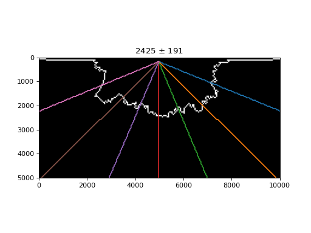

sandplover.plan.compute_shoreline_radius¶
- sandplover.plan.compute_shoreline_radius(shore_mask, origin=(0, 0), return_radii=False, **kwargs)¶
Radially-averaged shoreline radius.
Algorithm uses equally spaced
RadialSectionto calculate the distance to the shoreline.Note
In implementation, this metric uses the last (farthest) intersection of the RadialSection at a certain azimuth and the shoreline mask, if there are multiple intersections.
See also
This function is similar to, but distinct from
compute_shoreline_distance, which computes the straight-line distance between the origin and every point along the shoreline.- Parameters:
shore_mask (
ShorelineMask) – Input shoreline mask.origin – Origin for
RadialSectionobjects, specified in data dimensions (not indices) along dim1, dim2 of the data. Default (0, 0).return_radii (bool, optional) – Whether to return the calculated radii along each section, in addition to the mean and standard deviation.
**kwargs – Passed to
_determine_equally_spaced_azimuths.
- Returns:
mean – Mean radius over all sections.
std – Standard deviation of radii along all sections.
radii – Array of radius values calculated along all sections. Returned only if return_radii = True.
Examples
Compute the distance to the shoreline at seven equally spaced RadialSection:
import sandplover as spl golf = spl.sample_data.golf() origin = np.array([golf.meta["L0"].data, golf.meta["CTR"].data]) * golf.meta["dx"].data azimuth_kwargs = {"num": 7} shore_mask = spl.mask.ShorelineMask(golf["eta"][-1], elevation_threshold=0) mean_radius, std_radius = spl.plan.compute_shoreline_radius( shore_mask, origin=origin, **azimuth_kwargs ) # make a map to visualize the calculation from sandplover.plan import _determine_equally_spaced_azimuths azimuths = _determine_equally_spaced_azimuths(**azimuth_kwargs) fig, ax = plt.subplots() shore_mask.show(ax=ax, ticks=True) for a, azimuth in enumerate(azimuths): a_section = spl.section.RadialSection( golf["eta"][-1, :, :], azimuth=azimuth, origin=origin, ) a_section.show_trace(ax=ax) ax.set_title(f"{mean_radius:.0f} $\pm$ {std_radius:.0f}")
(
Source code,png,hires.png)
{kind=link}
{kind=link}